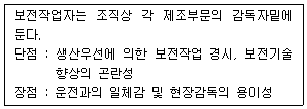
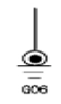
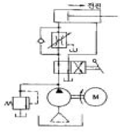

건설기계정비기능장 (2005-04-03 기출문제)
1과목: 임의 구분
1. 가압식 라디에이터의 장점이 아닌 것은?
- 냉각수의 손실이 적다.
- 열효율이 좋다.
- 냉각수의 순환속도가 빠르다.
- 방열기를 작게 한다.
(정답률: 20%)

2. 기관의 피스톤에서 압축링을 설치하는 목적으로 가장 알맞는 것은?
- 실린더 내면의 유막형성을 위하여
- 피스톤과 실린더사이에 적합한 틈새를 주기 위해
- 피스톤의 마멸을 방지하기 위하여
- 피스톤과 실린더사이의 기밀을 유지하며 피스톤의 열을 방출시키기 위하여
(정답률: 77%)
3. 다음은 디젤기관의 커먼레일 시스템 연료분사장치에 대한 설명이다. 틀린 것은?
- 연료는 연료탱크 → 저압연료펌프 → 연료 휠터 → 커먼레일 → 고압연료펌프 → 인젝터의 순으로 공급된다.
- 커먼레일에는 연료압력센서가 부착되어 있다.
- 고압연료펌프는 엔진의 캠축에 의해 구동되고 작동 압력은 1300bar 이상이다.
- 인젝터의 정상적인 저항값은 실온에서 0.3∼0.6Ω이다.
(정답률: 70%)
4. 디젤기관 연료인 경유의 세탄가를 측정하는 방법이 틀린 것은?
- 임계 압축법
- 흡입압력에 의한 방법
- 발화늦음에 의한 방법
- 발열량에 의한 방법
(정답률: 알수없음)
5. 실린더의 압축압력이 감소되는 원인에 해당되지 않는 것은?
- 피스톤링의 절개부가 일직선상에 있지 않을 때
- 실린더벽에 마멸과 흠이 생겼을 때
- 피스톤링의 마멸 또는 탄력이 부족할 때
- 피스톤이 마멸했거나 상부에 금이 갔을 때
(정답률: 64%)
6. 실린더내 연료분사의 조건을 갖추는데 있어 적당하지 못한 것은?
- 무화 작용이 좋아야 한다.
- 관통력이 있어야 한다.
- 발열량이 커야 한다.
- 분포가 잘 되야 한다.
(정답률: 63%)
7. 히이트 레인지는 어떤 형식의 연소실에 가장 많이 사용되는가?
- 예연소실식
- 직접분사식
- 공기실식
- 와류실식
(정답률: 알수없음)
8. 연료여과기 오버 플로우 밸브의 기능과 가장 거리가 먼 것은?
- 연료의 흐름저항 방지
- 회로내의 공기배출
- 연료여과기 보호
- 연료분사펌프의 소음발생 방지
(정답률: 40%)
9. 연료의 분사개시시기가 일정하고 분사끝이 변화되는 플런저 리드의 형식은?
- 정리드
- 역리드
- 양리드
- A형 리드
(정답률: 60%)
10. 저위발열량 1⑤00kcal/kg인 경유를 사용하여 연료소비율 180g/ps·h로 운전하는 디젤기관의 열효율은 몇 %인가?
- 29.5
- 30.5
- 33.5
- 36.3
(정답률: 알수없음)
11. 디젤기관에서 노크를 일으키는 것과 관계가 없는 것은?
- 압축비가 작다.
- 흡기온도가 낮다.
- 착화지연 시간이 길다.
- 착화 후의 연료 분사량이 많다.
(정답률: 60%)
12. 건설기계의 고속디젤기관에 사용되는 사바테 싸이클이란?
- 정압상태에서 열에너지 공급
- 정압, 정적상태에서 열에너지 공급
- 정적상태에서 열에너지 공급
- 등온상태에서 열 에너지 공급
(정답률: 64%)
13. HC 배출을 줄이기 위한 대책이 아닌 것은?
- 연소실을 반구형으로 설계한다.
- 배기관의 온도를 낮은 상태로 유지한다.
- 연소실 내의 난류 유동을 형성한다.
- 냉각수 온도를 가능한 높게 한다.
(정답률: 25%)
14. 크랭크축의 비틀림 진동(torsional vibration)을 감소시키기 위하여 플라이휠(fly wheel)외에 어느 것을 사용하는가?
- 베어링(bearing)
- 스프링(spring)
- 감쇠판(damper plate)
- 비틀림판(torsional plate)
(정답률: 59%)
15. 다음 중 검사를 판정의 대상에 의한 분류가 아닌 것은?
- 관리 샘플링검사
- 로트별 샘플링검사
- 전수검사
- 출하검사
(정답률: 67%)
16. 수요예측 방법의 하나인 시계열분석에서 시계열적 변동에 해당되지 않는 것은?
- 추세변동
- 순환변동
- 계절변동
- 판매변동
(정답률: 37%)
17. 원재료가 제품화 되어가는 과정 즉 가공, 검사, 운반,지연, 저장에 관한 정보를 수집하여 분석하고 검토를 행하는 것은?
- 사무공정 분석표
- 작업자공정 분석표
- 제품공정 분석표
- 연합작업 분석표
(정답률: 17%)
18. 파레토그림에 대한 설명으로 가장 거리가 먼 내용은?
- 부적합품(불량), 클레임 등의 손실금액이나 퍼센트를 그 원인별, 상황별로 취해 그림의 왼쪽에서부터 오른쪽으로 비중이 작은 항목부터 큰 항목 순서로 나열한 그림이다.
- 현재의 중요 문제점을 객관적으로 발견할 수 있으므로 관리방침을 수립할 수 있다.
- 도수분포의 응용수법으로 중요한 문제점을 찾아내는 것으로서 현장에서 널리 사용된다.
- 파레토그림에서 나타난 1∼2개 부적합품(불량) 항목만 없애면 부적합품(불량)률은 크게 감소된다.
(정답률: 알수없음)
19. 다음 내용은 설비보전조직에 대한 설명이다. 어떤 조직의 형태인가?

- 집중보전
- 지역보전
- 부문보전
- 절충보전
(정답률: 62%)
20. nP관리도에서 시료군마다 n=100 이고, 시료군의 수가 k=20이며, ΣnP = 77이다. 이때 nP관리도의 관리상한선 UCL을 구하면 얼마인가?
- UCL = 8.94
- UCL = 3.85
- UCL = 5.77
- UCL = 9.62
(정답률: 34%)
2과목: 임의 구분
21. 공기압축기의 선정 기준 중 공급체적은 압축기가 선정 해주는 공기의 양이며 이를 나타내는 방법에는 두 가지가 있다. 다음 중 이론공급체적과 다른 또 하나는?
- 유효공급체적
- 여유공급체적
- 비례공급체적
- 표준공급체적
(정답률: 65%)
22. 자동변속기의 유성기어 장치에서 후진이 되는 것은?
- 링기어 고정, 캐리어 구동
- 선기어고정, 캐리어 구동
- 캐리어 고정, 선기어 구동
- 링기어고정, 선기어구동
(정답률: 알수없음)
23. 버킷 용량이 0.6m3 인 굴삭기로 1일 5시간 작업할 때 작업량은 얼마인가? (단, 사이클시간 : 20초, 흙의 토량변화율 : 1.0, 디퍼계수 : 1.0, 작업효율 : 0.75)
- 2⑤ m3/day
- 3⑤ m3/day
- 4⑤ m3/day
- 5⑤ m3/day
(정답률: 19%)
24. 무한궤도식 하부 구동체(Under-carriage)의 트랙 앞 부분에서 프레임 위를 전후로 섭동할 수 있는 요크(Yoke)에 설치되어 있으며 스프로킷에 의한 트랙의 회전을 정확히 유지 시켜주는 장치는?
- 트랙 아이들러
- 캐리어 롤러
- 트랙 롤러
- 균형 스프링
(정답률: 50%)
25. 유압식 제동장치에서 베이퍼 록(vaper lock)의 방지책이 아닌 것은?
- 브레이크 장치가 과열되지 않게 한다.
- 유압회로내에 잔압을 유지하도록 한다.
- 내리막길에서 브레이크를 자주 사용하도록 한다.
- 비점이 높은 오일을 사용하도록 한다.
(정답률: 84%)
26. 토크컨버터에서 임펠러의 속도가 일정할 때 터빈의 속도가 감소되면?
- 회전력의 감소
- 회전력의 증가
- 작동력의 감소
- 엔진속도의 증가
(정답률: 37%)
27. 자동변속기 유압 제어회로에 작용되는 유압은 어느 곳에서 발생되는가?
- 변속기 내의 오일 펌프
- 변속기 내의 스테이터
- 흡기 다기관 내의 부압
- 매뉴얼 샤프트
(정답률: 알수없음)
28. 굴삭기에서 작동유의 점도가 너무 높은 상태에서 작업시 발생하는 현상으로 맞지 않는 것은?
- 발열의 원인이 된다.
- 유압이 낮아지는 원인이 된다.
- 캐비테이션의 원인이 된다.
- 동력손실의 원인이 된다.
(정답률: 59%)
29. 틸트밸브 스풀에는 엔진이 정지하고 있을 때 틸트레버가 전진위치로 놓여 있더라도 마스트가 앞으로 기울어지지 않도록 유압회로내에 설치한 밸브는?
- 틸트 밸브
- 릴리프 밸브
- 리프트 밸브
- 틸트 스윙 밸브
(정답률: 70%)
30. 모터 그레이더의 작업속도가 15 km/h, 작업거리가 500 m일때, 조종작업에 요하는 시간이 2분이라면 싸이클 시간은?
- 2분
- 3분
- 4분
- 5분
(정답률: 60%)
31. 차동기어장치에서 열이 발생하는 원인이 아닌 것은?
- 윤활유의 양이 부족하다.
- 사이드베어링의 조임이 불량하다.
- 구동피니언과 링기어의 백래쉬가 너무작다.
- 드라이브샤프트의 스플라인이 마모가 크다.
(정답률: 59%)
32. 로프의 전단, 마모는 규정치 이내이어야 하는데 소선 수의 전단은 몇 %이내 이어야 하는가?
- 5
- 7
- 10
- 15
(정답률: 알수없음)
33. 틸트도저가 할 수 있는 작업으로 적합하지 않은 것은?
- 측면 송토
- V형 배수로 작업
- 바위돌 굴리기
- 나무 뿌리 파내기
(정답률: 46%)
34. 다음 트랙롤러에 대한 설명 중 틀린 것은?
- 트랙롤러를 캐리어롤러 라고도 한다.
- 2중 플랜지형은 트랙의 정렬을 바르게 한다.
- 싱글 플랜지형은 트랙이 외부로 벗어나는 것을 방지한다.
- 5개의 트랙롤러가 있는 경우, 2번과 4번은 2중 플랜지형 롤러를 사용한다.
(정답률: 62%)
35. 무한 궤도식 트랙터가 고르지 않은 지면을 주행할 때 트랙이 지면의 요철 때문에 뜨지 않고 항상 정지(整地)되어 있는 지면을 통과하는 것 같이 주행할 수 있는 현가 방식은?
- 고정식(固定式) 현가방식
- 부동식(浮動式) 현가방식
- 가역식(可逆式) 현가방식
- 반경식(半硬式) 현가방식
(정답률: 19%)
36. 브레이크장치 회로 내에 잔압을 두는 이유 중 틀린 것은?
- 외부 공기유입 방지
- 브레이크 작동 늦음 방지
- 휠 실린더에서의 오일 누유 방지
- 브레이크장치 회로내의 잔압은 1kgf/cm2∼1.3kgf/cm2이내의 잔압을 둔다
(정답률: 알수없음)
37. 비자항식(非自航式) 준설선의 규격을 바르게 표시하지 못한 것은?
- 디퍼식은 버킷의 용량(m3)
- 그래브식은 그래브 버킷의 산적 용량(m3)
- 버킷식은 주기관의 연속 정격 출력(ps)
- 펌프식은 준설 펌프 구동용 주기관의 정격 출력(ps)
(정답률: 40%)
38. 유압식 조향장치에서 조향이 잘 안될 때의 원인으로 틀린 것은?
- 유압 오일이 과다할 때
- 펌프 구동 벨트의 유격이 클 때
- 제어 밸브가 고착되거나 마모 되었을 때
- 공급되는 유압이 낮을 때
(정답률: 40%)
39. 직류기에서 전기자 반작용이란 전기자 권선에 흐르는 전류로 인하여 생긴 자속이 무엇에 영향을 주는 현상인가?
- 편자 작용만을 하는 현상
- 모든 부분에 영향을 주는 현상
- 감자 작용만을 하는 현상
- 계자극에 영향을 주는 현상
(정답률: 40%)
40. 에어컨 콤프레서가 "ON" 되었을 때에는 응축기를 통과하는 냉매가 쉽게 응축되도록 전동팬이 회전하도록 되어있다. 그러나 콤프레서는 "ON" 되었지만 전동팬이 회전하지 않는다면 냉방성능에는 어떠한 영향을 미치는가?
- 고압측 압력이 상승한다.
- 저압측 압력이 떨어진다.
- 저압측 압력은 상승하고 고압측 압력은 떨어진다.
- 저압측 압력과 고압측 압력 모두 떨어진다.
(정답률: 알수없음)
3과목: 임의 구분
41. 그림의 회로도 기호를 설명한 것 중 틀린 것은?

- 구성 부품의 하우징이 직접 차량 금속 부분에 접지
- 차량의 금속 부분에 배선(하니스)을 이용한 접지
- G06은 접지 포인트로 접지 위치를 의미
- 구성 부품 위치도에서 G06 위치를 확인
(정답률: 50%)
42. 교류발전기에서 3상교류가 발생되는 곳은?
- 스테이터
- 전기자
- 로터
- 다이오드
(정답률: 59%)
43. 라디에이터와 냉각 팬을 감싸고 있는 판으로 공기의 흐름을 도와 냉각효과를 증대시키고 배기 다기관의 과열을 방지하는 역할을 하는 것은?
- 시라우드
- 방열기
- 수온조절기
- 냉각 팬
(정답률: 70%)
44. 배터리 셀페이션 현상의 원인으로 가장 적합한 것은?
- 충전 전압이 높다.
- 전해액의 양이 부족하다.
- 전해액의 온도가 높다.
- 충전 전류가 크다.
(정답률: 알수없음)
45. 반도체의 장점에 속하지 않은 것은?
- 내부전력 손실이 아주 작다.
- 역내압이 낮다.
- 예열시간을 요하지 않고 곧 작동한다.
- 극히 소형이며 가볍다.
(정답률: 86%)
46. 실드형 예열플러그에 대한 설명으로 맞는 것은?
- 단자전압이 낮으므로 직렬접속한다.
- 예열시간이 코일형보다 짧다.
- 코일형 보다 내구성이 떨어진다.
- 단자전압이 높으므로 병렬접속한다.
(정답률: 60%)
47. 기관의 회전저항이 8kgf-m이고, 링기어의 잇수가 117, 피니언의 잇수가 9라면, 기관을 시동시키기 위한 기동전동기의 필요 회전력(kgf-m)은?
- 0.6
- 1.7
- 0.9
- 1.2
(정답률: 15%)
48. 유압제어 밸브에서 스풀형식의 밸브가 사용되는 이유는?
- 계통 내의 압력을 변화시키기 위해
- 축압기의 압력을 변화시키기 위해
- 오일의 흐름방향을 변화시키기 위해
- 펌프의 회전방향을 바꾸기 위해
(정답률: 50%)
49. 유압 장치에 사용되는 실(Seal)의 구비조건으로 옳지 않은 것은?
- 압축 변형이 커야 한다.
- 고온에서 열화가 적어야 한다.
- 내화학성, 내약품성이 양호해야 한다.
- 내구성 및 내마모성이 우수해야 한다.
(정답률: 알수없음)
50. 굴삭기의 엔진시동을 정지하고자 할 때 가장 쉽고 안전한 방법은?
- 감압 레버를 당긴다.
- 2차 전압을 차단한다.
- 배터리 (+)단자를 탈거한다.
- 예열 플러그의 전원을 차단한다.
(정답률: 77%)
51. 유압 장치의 기본 회로 중 현재 일반용 공업장치, 산업용 기계장치에 많이 사용되고 있는 유압 회로는?
- 개방회로
- 밀폐회로
- 평행회로
- 직렬회로
(정답률: 50%)
52. 불도저의 스프로킷 축을 탈착할 때 가장 안전한 방법은?
- 탈착할 때는 특수공구를 사용하지 않는다.
- 베어링 레이스는 손을 이용하여 빼낸다.
- 탈착할 때는 크레인을 이용하여 케이스를 든 다음 받침대로 받친 후 작업한다.
- 볼트가 풀리지 않을 때는 해머를 사용하여 볼트를 푼다.
(정답률: 64%)
53. 그림의 유량 제어 회로에서 알맞는 회로 명칭은?

- 미터 인 회로
- 미터 아웃 회로
- 블리드 오프 회로
- 카운터 밸런스 회로
(정답률: 31%)
54. 오일쿨러(Oil Cooler) 점검정비 항목과 관계가 먼 것은?
- 바이패스 밸브의 작동 확인
- 오일의 누출과 물의 누출 여부
- 오일 스트레이너의 이상 여부
- 공기 또는 순환수의 출입구 온도차 점검
(정답률: 81%)
55. 50℃, 압력 10kgf/cm2abs인 공기에서 밀도는 몇 kgf.sec2/m4 인가? (단, 공기를 이상기체로 가정하고 기체상수 R = 29.27 kgf.m/kg·K)이다.)
- 1.08
- 5.32
- 10.57
- 8.8
(정답률: 알수없음)
56. 유압 실린더의 내경 20cm, 피스톤 로드의 직경 5cm, 피스톤 로드가 있는 쪽에 100 kgf/cm2의 유압이 가해진다고 하면 피스톤을 미는 힘은 몇 kgf인가?
- 2943.75
- 29437.5
- 1177.5
- 11775
(정답률: 알수없음)
57. 다음 중 전동효율과 토크효율이 가장 높은 유압 전동기는?
- 액시얼 플런저형
- 기어형
- 멀티스트로우크형
- 레이디얼플런저형
(정답률: 59%)
58. 드라이버 사용시 유의 사항 중 틀린 것은?
- 날 끝이 홈의 폭과 길이가 같은 것을 사용한다.
- 날 끝이 수평이어야 한다.
- 작은 공작물은 한손으로 잡고 사용한다.
- 각 부품의 규격에 알맞는 것을 사용한다.
(정답률: 73%)
59. 다음 중 압력제어 밸브가 아닌 것은?
- 교축밸브
- 언로우더 밸브
- 시퀀스 밸브
- 카운터 밸런스 밸브
(정답률: 알수없음)
60. 스크레이퍼 작업으로 할 수 없는 것은?
- 흙을 절삭한다.
- 깍은 흙을 운반한다.
- 흙을 높은 곳으로 들어올린다.
- 흙을 버리고 전압한다.
(정답률: 55%)